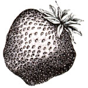

Demographers predict that by 1990 three-quarters of the U.S. population will live within 50 miles of a coast-Pacific, Atlantic, Gulf or Great Lakes. Yet coastal waters are already heavily burdened, says a report in Environmental Action magazine (bimonthly, $20; 1525 New Hampshire Ave. N.W., Washington, DC 20036). Nearly 3.5 trillion gallons of sewage are dumped into marine waters each year. Industrial wastes contribute a substantial share of pollution-industries in Maryland alone dump more than 2,763 tons of heavy metals into the Chesapeake Bay annually. Adding to the problem are offshore oil and gas drilling, coastal erosion caused by construction and the dumping of materials dredged from rivers and harbors. The sum total could spell crisis-but at least some positive forces are at work. Among them is the Coastal Zone Management Act (CZMA), passed in 1972 to provide federal funds to states that develop effective coastal management programs. For more information on coastal issues and CZMA, write the Coastal Alliance, 1001 Connecticut Ave. N.W., No. 535, Washington, DC 20036.
In search of a fail-safe method for preserving superior strains of food plants, scientists at the USDA's National Clonal Germplasm Repository in Corvallis, Oregon, are freezing strawberry shoot tips in liquid nitrogen and will be storing them at -325°F for as much as 100 years. In what has been called "the world's longest experiment," some of the shoot tips will be removed from deep freeze after five, 10, 25, 50, 75 and 100 years and (the researchers hope) grown into whole plants. The results of preliminary tests spanning shorter periods are encouraging: 90% of frozen-then-thawed shoots grew into normal, full-size specimens. If perfected, the technology could be used to keep back-up stocks of botanical material on hand, which could then be called upon to replace strains that might be wiped out by disease or disaster in the future.
Scientists working near hydrocarbon seeps 150 miles off the Louisiana coast have discovered deep-sea mussels that eat-and derive their nourishment from-methane. Bacteria inside the creature's gills convert the natural gas to proteins and other life-sustaining organic compounds. Researchers say that the mussels are the first living organisms known to have a taste for methaneand add that the mussels themselves taste "sweet and delicious."
A researcher studying commuter autos on the Los Angeles freeway during rush hour has found levels of toxic pollutants inside cars three to five times higher than daily levels outside. Samuel Witz of the South Coast Air Quality Management District discovered heightened concentrations of benzene, toluene, lead, nickel, chromium and manganese in automobiles traveling the freeway during peak periods. He ascribes part of the problem to deposits, both on the pavement and on tires, stirred up by heavy traffic and sucked in through auto ventilation systems. Concentrations were particularly high in air-conditioned cars driven with the windows up.
Texas Agriculture Commissioner Jim High-tower, a well-known consumer advocate and author of Eat Your Heart Out, has launched a state-wide program designed to encourage Lone Star farmers, food processors and consumers to keep their business at home. Over 300 Texas food companies and four dozen retail chains now use the program's "Taste of Texas" logo to identify their products. "For every additional 1% of the national food-processing market Texas captures," Hightower said recently, "the state's economy gains an additional $3 billion in retail sales . . . and 90,000 new jobs. For every dollar in retail sales by a Taste of Texas company, 36 cents goes to the Texas farmer. That's 11 cents more than the national average and can easily mean the difference between a producer shutting down and staying in business,.
Every lover of the suds knows that, despite a world awash in chemical-tainted brew, German beer remains pure-thanks to a 1516 law that allows only four ingredients: hops, barley, yeast and water. Now, however, Germany is being pressured to relax its standards by other members of the European Economic Community, who claim that the country's purity law discriminates against non-German brewers and constitutes an unfair trade practice. Germany already permits beer with preservatives and other nonconforming ingredients to be sold within its borders-but only if the brew is not labeled "beer." Apparently that wasn't enough to satisfy the EEC, though. On March 12, a 13-judge panel of the European Court in Luxembourg ruled against West Germany. Now, unless the Germans can show scientific evidence of harm, the additives will be allowed in beers imported into Germany. Particularly telling in the case was the fact that many German brewers use additives in their export beer.
The Michigan Marketing Association is looking for resident growers and foragers who can supply such wildlings as burdock root, cattail shoots, nettle greens, fiddle-heads, nasturtium flowers, papaws and per-simmons. "Specialty produce is the hottest thing in the grocery business today," says Christopher Steele, president of the organization. "People are looking for the exotic in their fruit and vegetable shopping." The organization will publish a catalog this fall and plans to start marketing wild produce next spring. Michiganders interested in participating can contact Christopher Steele, Michigan Marketing Association, 1118 N. Walnut St., Lansing, MI 48906.
If you're curious about what you and your children are really biting into when you eat at McDonald's, Burger King or any of 13 other major chains, check out The Fast Food Guide. The up-to-date paperback, published by the Center for Science in the Public Interest, lists the calorie, fat and sodium content of all major menu offerings, and includes charts and lists of ingredients to help you compare items. It's available for $4.95 plus 30e handling from CSPI, 1501 16th St. N.W., Washington, DC 20036.
Dozens of communities are expected to follow in the enterprising footsteps of Rockford, Illinois, which has gained renown for its effective "Cash for Trash" promotion. Each week a trash bag is chosen at random from the city's residential garbage collection. If the bag contains only "real" trash and not recyclable newspapers or aluminum, the owner receives $1,000 (the funds are paid from city contracts with trash-collection companies). If there's no winner, $1,000 is added to the next week's pot. Collections at recycling centers tripled in the first 10 weeks of the program.
Eleventh Annual Cosby Dulcimer & Harp Convention (June 12-14); $4 evening only, $9 one day, $17 weekend. Workshops for all levels. Folk Life Center of the Smokies, Inc., P.O. Box 8, Hwy. 32, Cosby, TN 37722, 615/4875543 . . . . "Yellowstone's Birds of Prey" (June 20-21; $65), "Birds of Yellowstone" (June 29-July 3; $195). The Yellowstone Association, P.O. Box 117, Yellowstone National Park, WY 82190, 307/344-7381, Ext. 2349. . . . "Summer Delaware Valley College Beekeeping Short Course" (June 26-28). Dr. Bob Berthold, DVC, Doylestown, PA 18901, 215/345-1500 . . . . "Farrier Science Course (Horseshoeing)" (July 6-25); $285 tuition, plus $195 tool set. Dr. Leon Wagley, New Mexico State University, Box 3501, Las Cruces, NM 88003, 505/646-4511.
|
 |
|
|